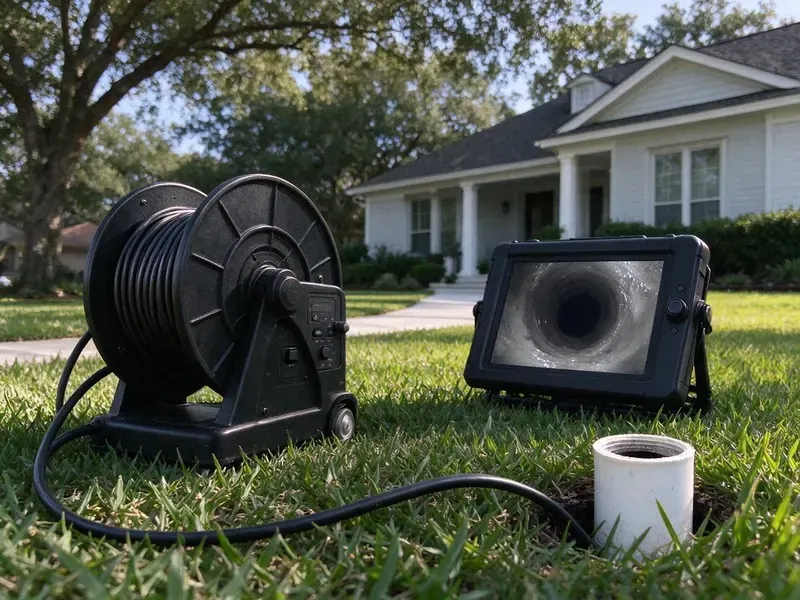

Sewer Line Replacement in Wyoming, MI
Pipe bursting or open trench, picked to fit your yard, depth and budget in Wyoming, MI.
- Locate and Camera Included
- Michigan Licensed Plumbers
- Camera Inspection Before Any Quote
- Pipe Bursting Available
Sewer Line Giving Out in Wyoming, MI?
Ask for a camera inspection and a written estimate for each method that fits.
Sewer Line Replacement for Wyoming, MI Homes
CHV Plumbing starts every sewer replacement in Wyoming, MI with a camera and a locator. We mark the depth and the break points on your lawn with paint so you can see what you are paying for before anything gets dug. Then you get prices. Nothing is guessed.
Some of what we do:
- Full Lateral Replacement, House to Main
- Pipe Bursting and Open-Trench Installs
- Schedule 40 PVC and Fused HDPE Pipe

Additional Drain Services Services in Wyoming, MI
From stubborn kitchen clogs to main sewer backups, our drain services in Wyoming, MI restore full flow fast and keep it that way.


Customers
Why Choose CHV Plumbing for Sewer Line Replacement in Wyoming, MI?
Our crew covers locates, permits, the install, inspection and backfill. One phone number. We do not hand the digging off to a company you have never heard of.
- Less Digging, Pinpointing the break means smaller holes when a spot repair will do.
- Pipe That Lasts, We install PVC and HDPE made for underground use in Michigan conditions.
- Local Ground Know-How, We have dug through the clay, rock and fill found around Michigan and plan the job around it.
Citywide Coverage
Every part of Wyoming gets sewer work from CHV Plumbing. Older blocks near the center tend to have clay or cast iron laterals, while newer tracts sometimes have early PVC failures from poor bedding. We have dug in both.
Experienced Team
When our crew arrives at your Wyoming, MI home, the lead plumber walks the line with you first. The lead walks you through pit spots, the dirt pile and truck parking before work begins. Questions are welcome. He will answer any question.
Safety-First Approach
Raw sewage carries real health risks. Our crews wear gloves and eye protection, keep sewage out of the yard as much as possible and disinfect tools before they go back on the truck. Keep pets inside.
Trusted Certified Wyoming Plumbing Services Professionals
At CHV Plumbing, we are proud to offer certified plumbing services throughout Wyoming, MI. Credentials matter in this trade. Every repair, install and maintenance visit follows strict safety and quality rules, and the plumbers doing the work carry recognized industry credentials.
Call Us Now PHCC Plumbing Contractor Recognition
PHCC Plumbing Contractor Recognition Better Business Bureau (BBB) Accreditation
Better Business Bureau (BBB) Accreditation Angi Certified Pro
Angi Certified Pro ISO 9001 Quality Management Certification
ISO 9001 Quality Management CertificationSewer Line Replacement Methods in Wyoming, MI
Sewer Camera Inspection in Wyoming
No replacement quote without video. We run a self-leveling color camera from the cleanout to the main and record every joint, crack, root mass and low spot along the way, with footage you keep. A transmitter in the head lets us paint the spot and depth above ground. The footage tells us whether one section or the whole line needs to go.

Commercial Sewer Lateral Work in Wyoming, MI
Apartment buildings, offices and restaurants in Wyoming, MI need lateral work too. Bigger flow and heavier grease mean careful sizing, extra cleanouts for jetting and attention to the grease interceptor tie-in. Some jobs need traffic control. We schedule around tenants and posted hours.
Emergency Sewer Collapse Repair in Wyoming
Every drain in the house stops when a lateral collapses. The tech scopes the line, marks the break and lets you know whether the dig can start next day or has to wait on locates. Locates usually take a couple of business days. We can often set up a bypass so one bathroom stays usable.
Spot Sewer Repairs in Wyoming, MI
Sometimes one joint is the whole problem. With only one bad section, we excavate a single small pit and splice in new PVC using shielded couplings. That costs much less. We only suggest it when the footage backs it up.
Sewer Codes and Inspections in Wyoming, MI
Inspectors check what gets buried. Michigan enforces a statewide plumbing code based on the International Plumbing Code, with plumbers licensed by the state. On a sewer job that means pipe size, minimum fall, bedding material, cleanout locations and the connection at the main or the tap. We book the inspection and meet the inspector. Unpermitted pipe sometimes has to be uncovered again for inspection, at the owner's expense.
Open-Trench Sewer Replacement in Wyoming
A collapsed run or a long belly usually means we dig. We open a trench along the old line, pull the broken pipe and lay new PVC on compacted bedding at a steady fall of an eighth to a quarter inch per foot. Where we can, the sod is cut and set aside before the digging starts. The inspector sees open pipe. We compact the backfill in layers, which keeps a dip from forming along the trench.
Clay and Orangeburg Sewer Replacement in Wyoming, MI
Orangeburg is tar-soaked wood fiber. It was installed in a lot of homes in the decades after the war, and over time it softens, blisters and squashes into an oval that catches everything going by. Clay is tougher but leaks roots. Several bad spots on one run usually make full replacement the better buy.

Emergency Sewer Replacement in Wyoming, MI
Sewage coming up a floor drain is an emergency. The first visit gets a camera in the line so we know if it has caved in or only needs clearing to buy time. A collapse means we put in the permit and utility locates right away. CHV Plumbing can often run a temporary bypass. With a bypass in place, the house can use a toilet and a sink until the new pipe goes in.
Local Sewer Replacement Crews in Wyoming, MI
Typing sewer line replacement near me in Wyoming, MI turns up plenty of names. Ask every company the same thing: do they show you the camera footage before they quote. We do. You get the video file afterward.
Hiring nearby speeds up the permit side. Our office files with the local building department often enough to know which forms they want and how far out inspections are booking. Fewer delays. That shortens the time your yard sits open.
CHV Plumbing at a Glance
- Fully licensed plumbing team covering Wyoming, MI
- 24/7 emergency service with same-day scheduling
- Clear written estimates, no hidden fees
- 4.9-star rated by 670+ Michigan customers
Wyoming Map
Wyoming Information
- Population
- 77,451
- Area codes
- 616/269/517
- Service area
- Wyoming and towns within a 40 mile drive
- Nearby
- Grand Rapids, Kentwood, Holland, Muskegon
Roots find the joints in old clay and cast iron sewer lines around Wyoming, MI, and each cleaning only buys a few months. Older neighborhoods may also have lead service lines, which the state is requiring utilities to replace over time.
Talk to a Plumber
Reach out to CHV Plumbing for reliable plumbing work done by licensed pros in Wyoming, MI.
Our Specialized Plumbing Services in Wyoming, MI
At CHV Plumbing, you get every kind of plumbing service from one company across Wyoming, MI. From leak detection to full system installs, our team works fast and charges fair prices on homes and commercial properties alike. Take a look at our core services below:


Start to Finish: Sewer Replacement in Wyoming, MI
Here is how a sewer replacement goes on your Wyoming, MI property, from the camera to the backfill.
Schedule a Visit
Call (810) 380-5918 or use the online form to book a time. We ask when the trouble started.
Find the Problem
A camera inspection shows the break and the depth. Then we write a plan with method and material.
Permits and Locates
We file the permit with Wyoming and request utility locates. We set up with plywood to protect the lawn.
Frequently Asked Questions About Sewer Line Replacement in Wyoming
A normal house lateral in Wyoming usually costs about $4,000 to $15,000. Long runs, deep taps and lines under slabs or driveways can push the price higher, and trenchless work often falls around $80 to $250 per foot depending on soil and access. Scoping sets the number.
Water heaters work overtime through winter because incoming water is so cold, which shortens their service life. Soils in Michigan range from heavy clay to sandy ground, and many areas have a high water table that keeps basements damp. Roots go after the moisture and warm air inside a sewer, slipping into joints and cracks and growing until they block the line. Old pipe cannot flex.
Backups in more than one drain at once are the big one. Gurgling toilets, a sewage smell in the yard, a soggy strip of extra-green grass and a sinking spot over the line all point the same way. A camera confirms it.
Not a good DIY project. It takes an excavator or a bursting rig, a permit, a laser level for fall, trench shoring for depth and an inspection before backfill. Deep trenches are dangerous.
Trench means one long dig along the whole line. With trenchless, we dig a pit at each end and either burst or line the pipe between them. Trenching can fix a belly.
Clogs come back on a schedule when the pipe is the problem. If you need the line cleared every few months, especially in an older home, roots or a broken section are usually behind it. Dips in the lawn are a warning. Scope it before the next cleaning.
Brand matters less than the standard. We buy PVC and HDPE from established manufacturers whose pipe is marked to the ASTM standard for sewer use, and the inspector will look for that marking. Brands change with supply.
Yes, sewer replacement usually needs a permit from the Wyoming building or public works office. Our office files the permit and books the inspection to check fall, bedding and cleanouts. Unpermitted work hurts resale.
Hear From Customers Who Hired Our Plumbing Experts

Greg S.
I manage a small strip center with six tenants. CHV Plumbing handles our annual backflow testing and fixed a recurring clog in the shared sewer line that had been backing into the nail salon. Their reports come in clean and on time.
Commercial Plumbing · Holland, MI
Marcus H.
Grease from the fryer line kept clogging the kitchen drain at my diner. CHV Plumbing hydro jetted the line after closing, showed me the buildup on camera, and set us up on a quarterly cleaning so it does not catch us on a Friday again.
Drain Cleaning · Kalamazoo, MI
Daniel K.
A pipe burst in the garage ceiling at 11 at night. Someone answered on the second ring, and the plumber was in my driveway about fifty minutes later. He shut off the main, cut out the split section, and had water back on before 2 am.
Emergency Plumbing · Muskegon, MIPaul B.
Our pit pump ran nonstop even in dry weather. The plumber found the check valve was stuck open, so the same water kept cycling back into the pit. New valve, new float switch, done in an hour. It runs quiet now.
Sump Pump · Kalamazoo, MI
Angela D.
Our sump pump quit during a storm and the water was an inch from the basement carpet. CHV Plumbing put in a new pump with a battery backup that same evening. We have had two heavy rains since. It kicked on both times.
Sump Pump · Wyoming, MI
Monica A.
Our water bill nearly doubled in one month with no change in how we used water. The tech checked the meter, heard the leak under the hallway with his equipment, and opened a hole about a foot square. Fixed the same day.
Slab Leak Repair · Holland, MI